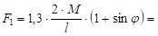
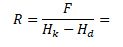
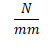

Моделирање склопа "Top-Down" поступком
Код "Top-Down" поступка моделирања склопа, компоненте моделирамо у контексту склопа, које после можемо да снимимо као екстерне "file"-ове, иначе егзистирају унутар склопа као виртуелне компоненте.
Материјал граничника је Č.1120 по старој ознаци (стандарду), а по новом стандарду ознака је: 1.0301 (C10)
Материјал горњег носача алата је SL.250 по старој ознаци (стандарду), а по новом стандарду ознака је: 0.6025 (EN-GJL-250)
сила савијања:  8874.67 
сила опруге (сила савијања је увећана за 30%):  2048
2048
крутост опруге:  51.2 , те бирамо опругу крутости  45.9 (процењујемо да ова опруга задовољава).
45.9 (процењујемо да ова опруга задовољава).
Материјал доњег носача алата је SL.250 по старој ознаци (стандарду), а по новом стандарду ознака је: 0.6025 (EN-GJL-250)